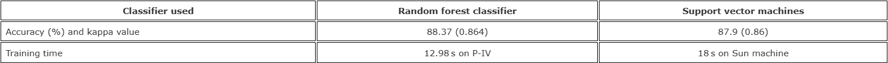
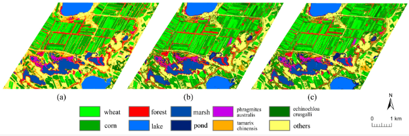

6 Week 6-Classification 1
6.1 Summary
This week’s curriculum provided an in-depth look at the use of machine learning for classification in remote sensing.
6.1.1 Classification and Regression Trees (CART)
- Employs a tree structure where nodes denote features, branches represent decision rules based on feature values, and leaf nodes indicate predicted class labels (for classification) or numerical values (for regression).
- Uses Gini impurity (for classification) or the lowest sum of squared residuals (SSR) (for regression) to recursively partition the feature space, aiming to enhance homogeneity within subsets.
- Includes mechanisms to prevent overfitting, such as setting a maximum depth for each node and a minimum number of samples per node, thus improving generalization.
6.1.2 Random Forest
- A collective of decision trees, each serving as a weak learner, integrated using ensemble learning techniques to bolster overall predictive performance.
- Incorporates randomness through bootstrapping (resampling with replacement) and feature randomness, ensuring a diverse set of trees and reducing feature correlation.
- For prediction, it aggregates the outcomes of all trees, selecting the most frequent class (classification) or averaging the results (regression) to produce a final decision.
6.1.3 Support Vector Machines (SVM)
- Acts as a linear binary classifier, akin to logistic regression but with a focus on maximizing the margin between two classes.
- The classifier identifies support vectors and constructs a separating hyperplane, termed the maximum margin classifier.
- Adjustments to parameters like C and gamma allow the model to balance the margin’s width against the error rate, affecting the classifier’s sensitivity to training data distribution.
Within the realm of remote sensing, supervised and unsupervised learning play pivotal roles in image classification
Supervised Learning is used when we have labeled data to train the model. Algorithms such as Random Forest and SVM are used to learn from the training data and then classify new, unlabeled data with precision.
Unsupervised Learning comes into play when there is no labeled data available. Methods like k-means and ISODATA cluster the data based on inherent patterns without prior knowledge, which is particularly useful for initial explorations of land cover types in satellite images.
Both learning paradigms are instrumental in advancing the classification and analysis of remote sensing data, with supervised learning providing precision where labels are known, and unsupervised learning offering exploratory insights when such labels are not available.
6.2 Application
M. Pal(2005) focuses on utilizing the Random Forest (RF) classifier for land cover classification from remote sensing data. It aims to present the results obtained with the RF classifier and to compare its performance with Support Vector Machines (SVMs) in terms of classification accuracy, training time, and user-defined parameters.The study utilized Landsat Enhanced Thematic Mapper Plus (ETM+) data for an area in the UK and involved classifying seven different land cover types. It concluded that the RF classifier performs equally well as SVMs in terms of classification accuracy and training time for the given dataset. The RF classifier also proved to be less sensitive to overfitting, a crucial advantage when working with complex datasets.
The table below shows final classification accuracy, kappa coefficient and training time of both classifiers.

In a study of my native Xinjiang, China, Tian, Shaohong, et al (2020) developed a Random Forest (RF) model by fusing high-resolution Pleiade-1B data with multi-date Landsat-8 NDVI series to classify wetland landcovers. The modeling process involved feature extraction and optimization, including geometric, spectral, and phenological characteristics, to address the classification challenges in arid wetlands.
This is the classification results of the RFC (a); SVM (b); and ANN (c) models.

- The RF model outperformed other machine learning classifiers, achieving an overall accuracy of 93% and a Kappa coefficient of 0.92, demonstrating its effectiveness in wetland classification. The inclusion of phenological information through NDVI series significantly improved the discrimination between vegetation types with similar spectral features but different growth patterns. This study showcases the potential of multi-sensor data fusion and RF classification in enhancing wetland monitoring and management in arid regions.
6.3 Reflection
The content learned in this class feels very familiar to me, because in the casa0006 class we have also been exposed to the application of machine learning in classification, so I am very curious about how to apply these technologies to remote sensing data. After comparing, I found when applying machine learning for classification tasks, whether in remote sensing data or panel data, the core goal is to categorize entities or pixels into predefined classes based on their features. However, they still have differences:
Data Complexity: Remote sensing data is spatial-temporal, capturing physical phenomena in images, while panel data tracks variables over time and entities, focusing on temporal dynamics without inherent spatial components.
Applications: Remote sensing primarily serves environmental monitoring and land use classification. In contrast, panel data finds use in economics, social sciences, and epidemiology, emphasizing temporal changes and impacts on entities.
Spatial vs. Temporal Analysis: Spatial autocorrelation is central to remote sensing, requiring spatial analysis techniques. Panel data analysis often addresses time-based autocorrelation and heteroskedasticity, employing models to handle individual-specific effects.
Both applications share the machine learning classification pipeline, including data preprocessing, feature extraction, model selection, and validation, but they adapt these steps to meet their specific data challenges and analytical objectives.